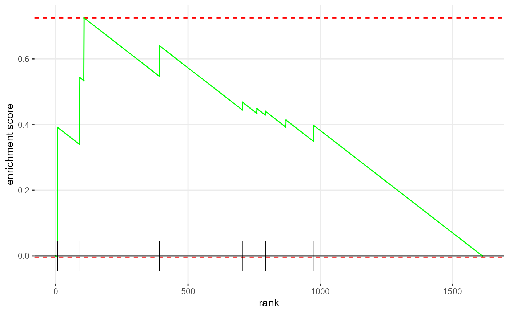

library(dplyr)
#>
#> Attaching package: 'dplyr'
#> The following objects are masked from 'package:stats':
#>
#> filter, lag
#> The following objects are masked from 'package:base':
#>
#> intersect, setdiff, setequal, union
library(magrittr)
library(DTSEA)
#> This package SHOULD NOT BE USED UNDER INTEL MATH KERNEL LIBRARY ON ANY OCCASION.
#> There is an avoidable but critical bug with Intel Math Kernel Library (MKL) on various operating systems.
#>
#> ======================================
#> For better performance, we recommend not using RStudio on Windows because RStudio cannot take advantage of the multi-core capabilities available on modern computers.Introduction
The Drug Target Set Enrichment Analysis (DTSEA) is a novel tool used to identify the most effective drug set against a particular disease based on the Gene Set Enrichment Analysis (GSEA).
The central hypothesis of DTSEA is that the targets of potential candidates for a specific disease (e.g., COVID-19) ought to be close to each other, or at least not so far away from the disease. The DTSEA algorithm determines whether a drug is potent for the chosen disease by the proximity between drug targets and the disease-related genes. Under the central hypothesis of DTSEA, the DTSEA consists of two main parts:
- Evaluate the influence of the specific disease in the PPI network by the random walk with restart algorithm.
To evaluate the influence, we compute the disease-node distance by using the random walk with restart (RwR) algorithm, then rank the nodes reversely.
- Evaluate the drug-disease associations based on GSEA.
The GSEA approach is adopted in this part to identify whether candidate drug targets are disease-related (top) or disease-unrelated (bottom) on the human PPI list. The specific disease gene list is normalized by the median and is set zero as the arbitrary cutoff point to classify the relations manually.
This vignette illustrates how to use the DTSEA easily. Here, using functions in this package, users could identify potential drugs for disease by the DTSEA algorithm.
Example 1: Calculate the enrichment scores of drugs.
The function DTSEA is used to calculate the enrichment
scores of drugs. The parameters are as follows:
-
network: The human protein-protein interactome network. It should be or be preconverted before being inputted in DTSEA. -
disease: The disease-related nodes. -
drugs: The drug-target long format dataframe. It includes at least columns with the drug_id and drug_target. -
rwr.pt: The random walk p0 vector. Set it to zero if you wish DTSEA automatically compute it, or you can provide your predetermined p0 vector. -
eps: The boundary of calculating the p value. -
nPermSimple: Number of permutations in the simple fgsea implementation for preliminary estimation of p-values. -
gseaParam: GSEA parameter value, all gene-level statistics are raised to the power of ‘gseaParam’ before calculating GSEA enrichment scores. -
verbose: Show the messages.
# Load the data
data("example_disease_list", package = "DTSEA")
data("example_drug_target_list", package = "DTSEA")
data("example_ppi", package = "DTSEA")
# Perform a simple DTSEA analysis using default optional parameters then sort
# the result dataframe by normalized enrichment scores (NES)
result <- DTSEA(network = example_ppi,
disease = example_disease_list,
drugs = example_drug_target_list, verbose = FALSE
) %>%
arrange(desc(NES))
#> Warning in preparePathwaysAndStats(pathways, stats, minSize, maxSize, gseaParam, : There are ties in the preranked stats (0.81% of the list).
#> The order of those tied genes will be arbitrary, which may produce unexpected results.
head(result)
#> # A tibble: 6 × 8
#> drug_id pval padj log2err ES NES size leadingEdge
#> <chr> <dbl> <dbl> <dbl> <dbl> <dbl> <int> <list>
#> 1 DB00112 0.00489 0.0309 0.407 0.729 1.84 9 <chr [4]>
#> 2 DB09079 0.0969 0.266 0.0928 0.509 1.40 12 <chr [10]>
#> 3 DB11952 0.0671 0.255 0.111 0.890 1.38 2 <chr [2]>
#> 4 DB05017 0.100 0.266 0.0904 0.866 1.35 2 <chr [2]>
#> 5 DB11526 0.161 0.339 0.0701 0.681 1.31 4 <chr [4]>
#> 6 DB01611 0.203 0.350 0.0621 0.719 1.26 3 <chr [3]>You can arrange the positive results by NES
select(result, -leadingEdge) %>%
arrange(desc(NES)) %>%
filter(NES > 0 & pval < .05) %>% head()
#> # A tibble: 1 × 7
#> drug_id pval padj log2err ES NES size
#> <chr> <dbl> <dbl> <dbl> <dbl> <dbl> <int>
#> 1 DB00112 0.00489 0.0309 0.407 0.729 1.84 9Or we can draw the enrichment plot of the first predicted drug using
fgsea package.
fgsea::plotEnrichment(
pathway = example_drug_target_list %>%
filter(drug_id == slice(result, 1)$drug_id) %>%
pull(gene_target),
stats = random.walk(network = example_ppi,
p0 = calculate_p0(nodes = example_ppi,
disease = example_disease_list)
)
)
Example 2. Get the influence of the specific disease in the PPI network
The function random.walk calculates the pt
vector. The parameters are as follows:
-
networkThe input graph object. It should be either igraph object or edge list matrix / data frame. -
p0The starting vector on time 0. -
edge_weightLogical to indicate whether the input graph contains weight information. -
gammaThe restart probability used for RwR. Thegammatakes the value from 0 to 1, controlling the probability that a node would go back to its starting node. -
thresholdThe threshold used for RwR. Thethresholdindicates the stabilization status, which is a stopping criterion of RwR. -
pt.post.processingThe way to scale theptvector. It can be ‘none’, ‘zscore’, and ‘log’. -
pt.alignThe way to normalize the outputptvector. It can be ‘mean’ to manually cut the up- and down-regulated genes, ‘median’ to avoid the influence of the distribution shape, or ‘none’ for no normalization.
# Calculate p0
p0 <- calculate_p0(nodes = example_ppi, disease = example_disease_list)
# Then perform random walk
random.walk(network = example_ppi, p0 = p0, verbose = FALSE) %>%
head()
#> MYD88 MAPK14 TRAF1 JAK2 AGT IRAK2
#> 5.010910 4.994586 4.985955 4.970095 4.964825 4.959323Example 3. Calculate the consistency of the prediction
The function cronbach.alpha and kendall.w
are used to calculate the prediction consistency.
If you have several prediction results, you can use either function to describe the consistency.
# Just report the results
kendall.w(data)$report
#> [1] "Kendall's coefficient W = 0.752, p = 0.0897"
# Or just report the alpha
cronbach.alpha(data)
#> [1] 0.7232358Multicore capability
You can enable the multicore feature to utilize the multicore advantages. Here is the benchmark.
# set up environment
single.core <- function() {
suppressWarnings(capture.output(DTSEA(network = example_ppi, disease = example_disease_list, drugs = example_drug_target_list, nproc = 0)))
NULL
}
dual.core <- function() {
suppressWarnings(capture.output(DTSEA(network = example_ppi, disease = example_disease_list, drugs = example_drug_target_list, nproc = 10)))
NULL
}
system.time(single.core()) - system.time(dual.core())Supplementary data files
In this package, we provide the example data, which is a small set of data to demonstrate the usage and the main idea behind DTSEA. We provide some extra data files, the real data we used in the DTSEA paper. The supplementary package is now on the GitHub. Anyone can obtain this package by:
if (!"devtools" %in% as.data.frame(installed.packages())$Package)
install.packages("devtools")
devtools::install_github("hanjunwei-lab/DTSEAdata")Here is a list of the supplementary datasets
| Data name | Description |
|---|---|
deletion |
Drug prediction results on trimmed graphs after enrichment |
drug_indications |
The drug indications data from ChEMBL |
drug_predicted |
The drug target data predicted by ChEMBL |
drug_targets |
The combined drug target data |
expr_raw |
The raw expression profile of GSE164805 |
graph |
The human gene functional interaction network we used |
ncbi_list |
The COVID-19-related genes provided by NCBI |
Known bugs
The Intel Math Kernel Library (MKL) performs poorly with this package when dealing with linear algebra operations. If you use MKL-based BLAS or MKL-based R distribution (like Microsoft R Open), you will get unexpected or zero results in certain circumstances. Please install the Automatically Tuned Linear Algebra package (libatlas) or the multi-threaded OpenBlas library in order to get higher performance and reliable results with:
sudo apt install libatlas3-base -yor
sudo apt install libopenblas-base -y